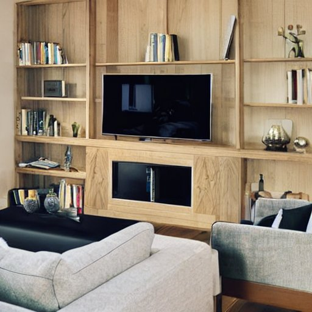

Our Focus
Electronic Waste for Households in Rhode Island
E-waste is made up of household and K-12 school desktop computers, CRT monitors and televisions, flat screen monitors and televisions, laptops, notebooks, and tablets with screen sizes larger than an adult man’s hand.
